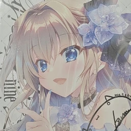
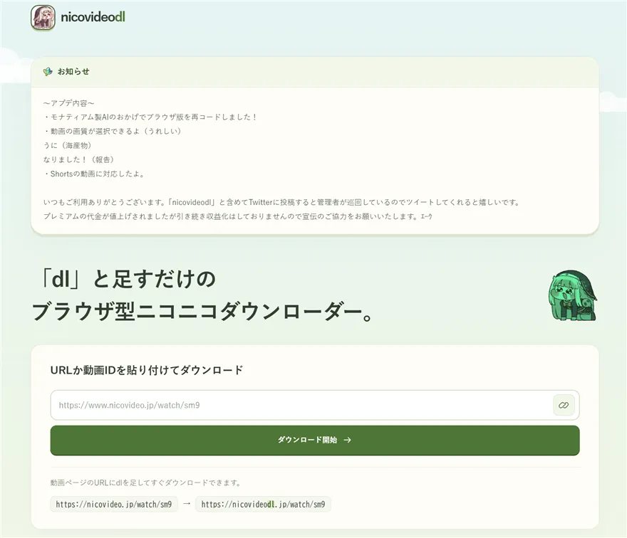
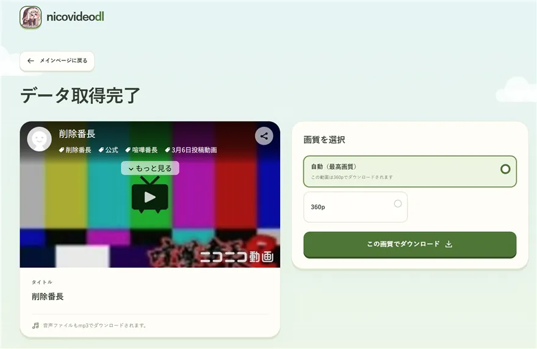
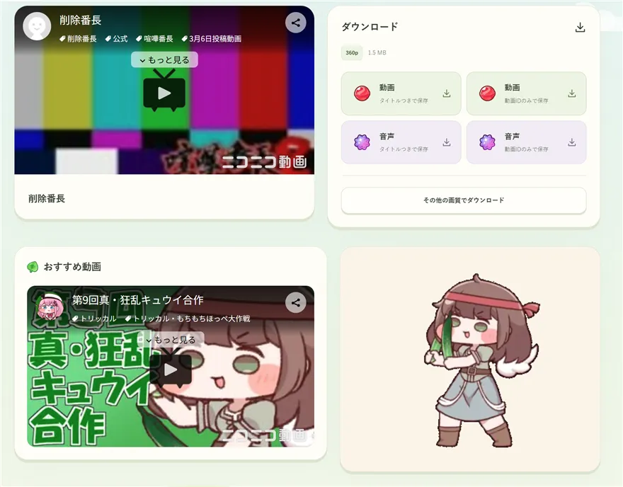

MiyakoNet
人と触れ合うことや旅が好きで、人のために動くのも得意です。
作りたいと思ったものを、思ったままの形にしています。
いつかそれが誰かの笑顔につながれば嬉しいです。
About
こんにちは、MiyakoNet と申します。
名前の由来は、当時知り合いにすすめられて始めた 9-nine- というゲームの九條都というキャラクターです。ハマってグッズを集めるほど好きになり、アイコンと名前の「Miyako」をお借りして、ドメインの「.net」を繋げて MiyakoNet としました。
中学時代に Python を教わったことをきっかけに、トラフィック解析を通じてアプリケーションやバックエンドの仕組みを知るようになり、プログラミングの世界にのめり込んでいきました。
あのとき教えてくださった方との出会いがあったからこそ、今の自分があると感じています。その感謝を忘れずに、自分からいろいろな方と関わるようになりました。
これまでに 2,000 人規模のグループでのサポート業務をこなし、個人プロジェクトでの顧客対応などを通じて 6 年以上、人と向き合ってきました。これからも皆さまの力をお借りしながら、成長を続けていきます。
-
スキル
Python, トラフィック解析, リバースエンジニアリング
-
資格
高卒認定試験（18歳）, ITパスポート（19歳）
-
好きなもの
人とのふれあい、旅行、音楽、ゲーム、九條都 (9-nine-)
Works
- 01 国内 SNS マーケティング支援のサポート業務（2019 〜 2023） 国内 SNS インフルエンサー向け成長支援事業にて、累計 3,000 人以上のお客様対応と事後対応を担当し、サービスの高評価と売上向上に貢献しました。
- 02 海外ゲームコミュニティでのサポート・運営（2021 〜 2022 / 2024 〜 2025） 二次創作コミュニティとしては最大級の規模となる、登録ユーザー 10,000 人超・総売上 1,500 万円超（当時の日本円）の海外ゲームコミュニティ 2 つにて、コミュニティの管理者としてサポートや翻訳（一部）をボランティアで担当。日本とは異なる英語での対応を経験してスキルアップし、売上向上にも貢献しました。
- 03 Python でのエンジニア業務・小規模システム開発（2023 〜） SNS マーケティング事業の業務効率化プログラムや、クライアント様向けのマイクロアプリケーションを作成。トラフィック解析の専門知識を活かしたツールを作成した際には、特に高い評価をいただきました。
- 04 海外向け SNS のブランディング支援（2023 〜） 海外のインフルエンサーや、ブランドを確立したい方を中心に、SNS での認知拡大・ブランド化をサポートしています。現在も多くのお客様に支えられ、高い評価をいただきながら事業を続けています。
- 05 動画チャンネルの M&A 事業（2026 〜） 縦型動画需要が高まる中、スタートダッシュを切りたい国内の個人・企業様向けに、動画チャンネルの M&A 事業を展開しています。基盤が固まっているチャンネルはゼロから育てるより伸びやすく、これまでに法人企業様との取引実績もあります。
Projects
Web Service
nicovideodl.jp
2023 年 11 月から運営しているニコニコ動画の動画ダウンロードサイトです。Twitter で紹介された際には 1 万件以上のいいねを獲得しました。月間ユニークアクセス約 8,000 件以上、毎時 30 件以上、ピーク時には 100 件を超えるアクセスがあり、定番のダウンロードサイトとして利用されています（データ提供元: Cloudflare）
GitHub
portfolio
このフロントエンドページ自体のリポジトリです。Vercel で手軽にホストできるよう、HTML / CSS / JavaScript ベースで作成した、シンプルでかわいいデザインのポートフォリオです。
リポジトリを見る →



サイトを見る →Contact
ご連絡はメールアドレス又は各SNSからお気軽にお願いいたします。
contact@miyako.net